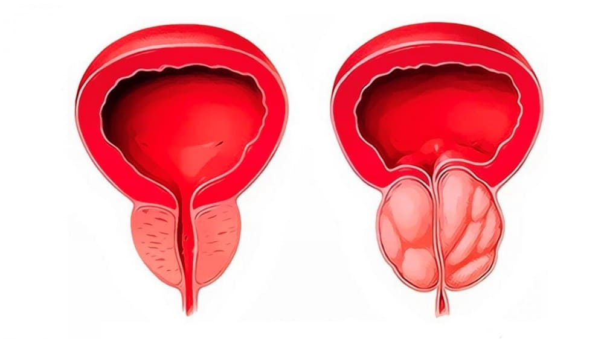
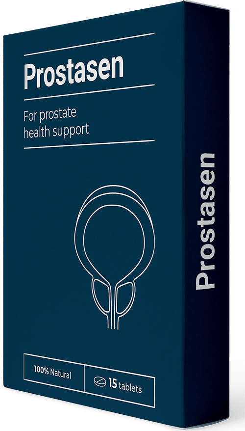
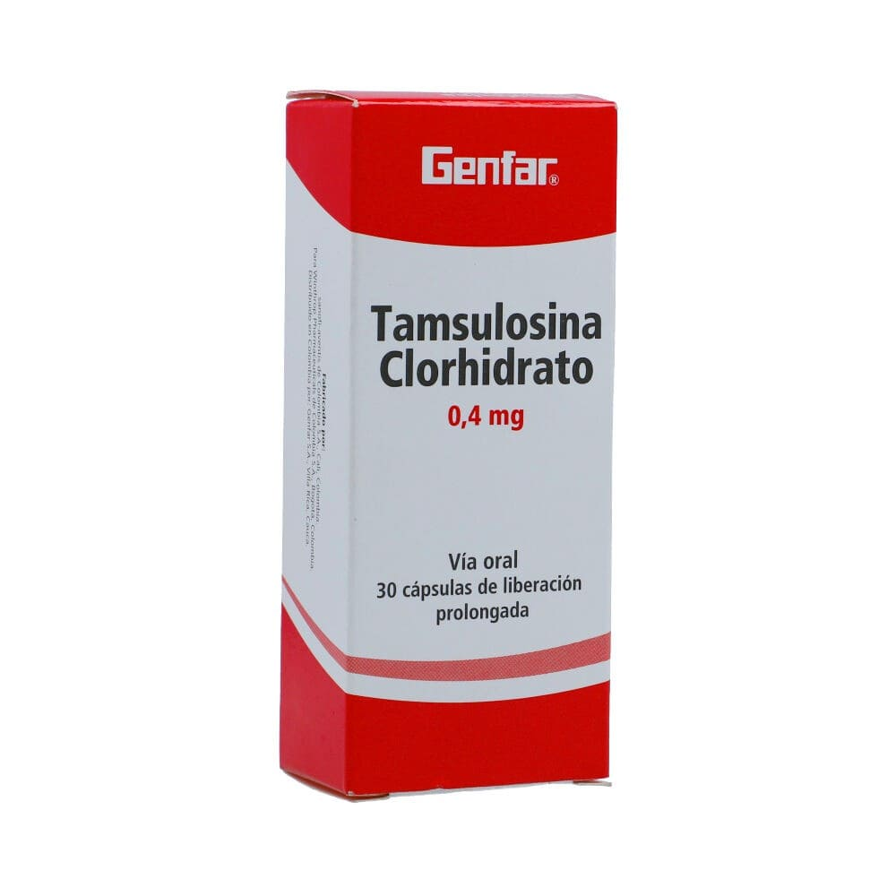

EN LOS ESTADOS UNIDOS, LOS HOMBRES TRATAN LA PROSTATITIS EN 2-3 SEMANAS CON UNA TÉCNICA ESPECIAL Y SE CURAN PARA SIEMPRE
Mientras tanto, en México, los médicos conspiran para prescribir medicamentos inútiles a los hombres, tratando de extraer la mayor cantidad de dinero posible de ellos (para saber cómo encontrar este medicamento y dónde obtenerlo, lea este artículo cuidadosamente)
La prostatitis es la enfermedad más común entre los hombres mayores de 40 años. En los últimos años, se ha registrado una disminución en este umbral: cada vez más, hombres de 30 años acuden a los proctólogos. Se registraron casos de prostatitis a los 24 y 22 años.
Desde el punto de vista de la proctología, esta tendencia poco saludable se debe a una serie de razones:
- - un estilo de vida sedentario
- - una vida sexual irregular
- - enfermedades infecciosas
- - predisposición hereditaria
- - estrés y enfermedades del sistema genitourinario
Compruebe si tiene síntomas de la prostatitis:
Se publicaron estadísticas impactantes en 2021: uno de cada tres hombres mayores de 37 años tenía problemas de próstata. Determinar la presencia de prostatitis es posible por su cuenta, sin visitar a un médico:
-
Dolor agudo:
- - en la parte inferior del abdomen, en el escroto;
- - en el perineo o el pene.
-
Problemas urinarios:
- - micción frecuente, ardor en la uretra;
- - sensación de vaciado incompleto de la vejiga;
- - dificultad para orinar (flujo de orina débil).
-
Trastornos sexuales:
- - disminución del deseo sexual;
- - deterioro de la duración y calidad de las relaciones sexuales;
- - erección débil.
-
Alteración de la eyaculación:
- - eyaculación precoz o problemas con su logro;
- - eyaculación débil;
- - un pequeño recuento de espermatozoides.
Uno de los signos clave que acompañan a la enfermedad fue el aumento de la fatiga y la irritabilidad. Pero incluso una clara disminución en la calidad de vida de no todos los hombres puede obligar a consultar a un especialista. Después de todo, el procedimiento de examen de próstata, francamente, es desfavorable.

Si la prostatitis no se trata,
es inevitable el adenoma de próstata.
Los hombres que se avergüenzan de su diagnóstico, desde un punto de vista psicológico, se les puede entender: el procedimiento diagnóstico, la enfermedad en sí y, especialmente, su tratamiento conservador no causa deleite a nadie. La mayoría de los pacientes rechazan la intervención rectal. A cambio, los médicos le recetan un tratamiento farmacológico distribuido por compañías farmacológicas. A menudo, este tratamiento ayuda a mantener la dinámica, detener el dolor, evitando que la enfermedad crezca. Pero tan pronto como termina la medicación, los síntomas desagradables junto con el peligro de desarrollar un tumor canceroso aumentan varias veces.
Cómo se trata la prostatitis (y cómo NO SE DEBE tratar)
La prostatitis es una enfermedad grave que es bastante difícil de curar. El tratamiento estándar para la prostatitis:
Independientemente de si va a una clínica privada o a una cita gratuita, tendrá que pagar por el análisis y la cantidad será considerable. El médico realizará un examen, prescribirá una serie de procedimientos y pruebas adicionales. Prepárese para pagar una cantidad considerable por los estudios. Después de llenar la historia clínica, el médico hace un diagnóstico y prescribe "medicamentos populares". Los medicamentos recetados están diseñados para detener los síntomas agudos de la enfermedad, sin embargo, no detienen el tratamiento de la prostatitis crónica. Y, por supuesto, el urólogo recomendará los medicamentos de las compañías farmacéuticas cuyos representantes médicos le han traído la mayor cantidad de dinero. Estos medicamentos son ampliamente conocidos: puede verlos en las vallas publicitarias de su ciudad, en el consultorio de un médico o en línea.
Además de medicamentos especiales para aliviar los síntomas, los médicos siempre prescriben un masaje rectal o un tratamiento de próstata con un efecto similar. Este es un procedimiento humillante y muy desagradable, el masaje se realiza insertando el dedo en el ano. En promedio, se requieren 10-14 procedimientos, cada uno de los cuales cuesta mucho dinero.
Además del tratamiento principal, los especialistas a menudo recetan medicamentos para mejorar las funciones sexuales, la calidad del esperma, la "recuperación del cuerpo" después de tomar antibióticos y otros medicamentos, en la mayoría de los casos inútiles.
Entonces, el costo del tratamiento de la prostatitis en México varía de 300 a 1, 500 dólares, dependiendo de la capacidad financiera del paciente. Después de este tratamiento, se librará de los síntomas molestos, pero la enfermedad en sí no irá a ninguna parte. La prostatitis crónica persistirá y volverá a empeorar una vez que deje de seguir las recomendaciones (incluida la dieta) prescritas por su médico. Los síntomas regresarán a usted y usted junto con ellos volverá al médico. Y así continuará en círculos: mientras pague por el tratamiento, será tratado indefinidamente.
¿Cómo se trata la prostatitis en los Estados Unidos?
En los Estados Unidos, ni siquiera es necesario consultar a un médico para tratar la prostatitis. ¡Basta con acudir a la farmacia con los primeros síntomas y comprar los productos probados durante décadas que no llegan al mercado farmacológico de México solo porque ayudan (una vez en la vida y para siempre) a curar la prostatitis crónica por completo!
No se lanzará a la venta en México tal producto y nunca aparecerá, porque para los propietarios locales de negocios farmacéuticos simplemente no son rentables. Su principal tarea es obtener ganancias. Si los hombres comienzan a recuperarse, dejarán de consultar a los médicos y, en consecuencia, dejarán de comprar sus medicamentos ineficaces.
En los Estados Unidos, la medicina está altamente desarrollada: los médicos reciben salarios bastante altos, por lo que no es rentable aceptar los trucos de los farmacéuticos para ellos. Después de todo, allí si se te demuestra que perteneces a un esquema fraudulento, el médico se enfrenta a una pena de prisión. Además, en los Estados Unidos existen seguros de salud que ya incluyen visitas al médico. Las visitas frecuentes de los pacientes simplemente no son rentables para ellos. Los médicos estadounidenses están interesados en asegurarse de que el tratamiento sea lo más efectivo y rápido posible.
En los Estados Unidos, los intereses de las compañías de seguros les han ganado a los esquemas deshonestos de las compañías farmacéuticas y, afortunadamente para la gente común, siempre hay un remedio disponible para ayudar a curar la prostatitis de una vez por todas.
¿Cambiará la situación en México para mejor?
Desafortunadamente, no es necesario esperar cambios positivos en esta área, ya que el negocio multimillonario de las compañías farmacéuticas estadounidenses no lo permitirá.
Sin embargo, hoy no es necesario comprar medicamentos en farmacias. Esto se puede hacer en las tiendas en línea y en los sitios web oficiales de los fabricantes. Más recientemente, se ha convertido en uno de los remedios más efectivos en los E.E.U.U. Este producto también se puede comprar en nuestro país. Casi inmediatamente después de aparecer en el mercado, superó a todos los competidores y ganó la confianza de los hombres con su efectividad.
Para mayor claridad, aquí hay una tabla comparativa entre el medicamento farmacéutico más popular Tamsulosina y .
|
 |
 Tamsulosina |
|---|---|
| Precio: | |
| ¡PUEDE COMPRAR CON UN % DE DESCUENTO! | $ 6100 por 60 cápsulas. Oferta mínima: 3 frascos = $ 183.000 |
| Efecto: | |
| Elimina completamente la prostatitis, incluida la crónica, en 1 curso. | Solo elimina los síntomas agudos de la prostatitis: dolor y dificultad para orinar. |
| Propiedades adicionales: | |
|
Suaviza la defecación, mejora la peristalsis intestinal. |
| Efectos secundarios, daño al cuerpo: | |
| No presenta | Dolor de cabeza, mareos, astenia, trastornos del sueño (somnolencia o insomnio), eyaculación retrógrada, disminución de la libido, priapismo, dolor de espalda, rinitis; hipotensión ortostática, desmayo, taquicardia, palpitaciones, dolor en el pecho; náuseas, vómitos, estreñimiento o diarrea; reacciones alérgicas a los componentes del medicamento (erupción cutánea, picazón, urticaria, angioedema). Cuando se usa con frecuencia puede causar cambios malignos en la próstata. |
| Principio de acción: | |
| Tiene un efecto terapéutico general en la próstata gracias a una composición especialmente seleccionada de 6 ingredientes naturales, tiene un efecto antiinflamatorio y reafirmante. Elimina toda la microbiota patógena de la próstata, mejora su estructura y funciones. Se recomienda para la prostatitis crónica, estancada y bacteriana. | Alivia temporalmente el dolor en la próstata, enmascarando el curso de la enfermedad. Después de terminar de tomar el medicamento, la enfermedad empeora nuevamente. |
| Componentes: | |
| Compuestos y vitaminas vegetales naturales. | Principio activo – clorhidrato de Tamsulosina 0,4 mg |
En nuestro país, el fabricante ha logrado hacer que esté disponible para todos! Después de muchas negociaciones, logramos lanzar un programa masivo para cuidar la salud masculina. El objetivo del programa es proporcionar a cada hombre la oportunidad de curar la prostatitis sin llevarlo a que desarrolle cáncer, independientemente de su situación financiera. Como parte de este programa, recibirá con un % de descuento.
Puede comprar en el sitio web del fabricante diligenciando el siguiente formulario
Ya ha comenzado la campaña a gran escala de las principales compañías farmacéuticas del país contra este producto. En un futuro próximo, será imposible venderlo. Recomendamos que todos los hombres compren mientras aún sea posible. Hasta (inclusive), el producto se venderá con un descuento del %.
Comentarios
Alex Espitia
4.07.2022
Confirmo que es un remedio increíble. Lo compré durante las vacaciones del verano pasado es casi 5 veces más caro. Antes de eso, traté la prostatitis durante 10 años, todo sin éxito. Con un tratamiento con pasó la enfermedad. Pensé que tenía suerte, pero a juzgar por los comentarios, no soy el único.
Sergio Velasco
6.07.2022
Llegó el paquete, lo entregaron rápida y directamente a mi casa. Veamos cómo funciona este medicamento.
Diego García
7.07.2022
También he tenido experiencia en el tratamiento de la prostatitis con este producto. Compraba en el mismo sitio oficial, pero era necesario realizar un pedido en los Estados Unidos y costaba alrededor de 600 pesos por paquete. Pero vale la pena, porque me ayudó a deshacerme de la prostatitis en aproximadamente 2 semanas sin nada de masajes.
Guillermo Macias
9.07.2022
Vi un programa que hablaba de este medicamento y que en México no se vende en las farmacias. Algo así como de periodismo de investigación. Aparentemente, se hablaba precisamente del .
Diego Cuellar
9.07.2022
Tengo prostatitis crónica desde los 28 años. Ahora tengo 41 años. Todo este tiempo intenté ser tratado dos veces, pero sin ningún resultado especial. La última vez, los médicos a duras penas me salvaron. Dijeron que la prostatitis puede convertirse en cáncer de próstata. Por lo tanto, a todos los que tienen prostatitis, les aconsejo que se deshagan de ella lo antes posible. Es muy peligroso
Rodolfo Puentes
10.07.2022
Logré ordenar con un descuento del %. ¡Gracias!
Juan Linares
12.07.2022
¡ es el mejor remedio de todos! Estoy de acuerdo con el autor del artículo y todos los comentaristas que le echan flores. Lo tomé hace tres meses. ¡La prostatitis se fue por completo! Sufrí durante muchos años, pero ahora todo mejor que bien. ¡Al fin!
Víctor
13.07.2022
+500. Es un remedio perfecto
Jorge R.
13.07.2022
Leí la información completica en el sitio web sobre . Me dejó muy impresionado! Lo deben traer en una semana, no puedo esperar.
Giovanni S.
14.07.2022
Mi gente, este es un producto realmente valioso. Al principio era muy escéptico. Ahora, un mes después de tomarlo, no tengo signos de prostatitis. Sin dolor, sin inflamación, sin problemas para orinar. En resumen, estoy muy feliz. Lo super recomiendo!
Álvaro
16.07.2022
Lo pedí hace aproximadamente un mes, y después de una semana sentí el efecto. Pensé que tendría que ir a la cirugía, pero ahora las cosas han cambiado. Tengo 54 años, y me siento de 34, no me lo esperaba :)
Ricardo
17.07.2022
¡Estoy listo para confirmar cada palabra! ¡Este remedio está de la pm! Lo compré recientemente, hace aproximadamente un mes y me ayudó a olvidarme del problema. Tuve prostatitis, aunque no pude curarla durante mucho tiempo, además, la erección mejoró notablemente y quiero mucho más sexo. Recomiendo a todos, especialmente a los hombres mayores de 40 años.
Cristóbal
18.07.2022
Hermanos, no tarden en comenzar, si la prostatitis se vuelve crónica, esto conducirá al cáncer de próstata, uno de mis familiares, desafortunadamente, murió de esto, por lo que a los primeros signos, consulté a un médico de inmediato. Fui a los médicos durante un año, pero nada ha cambiado.
Antonio
18.07.2022
Durante el último año y medio tuve problemas de próstata, me hice masajes, tomé pastillas, pero no ayudó. Con la ayuda de , por el contrario, resolví todos los problemas en dos semanas, además, ahora me olvidé por completo de la prostatitis, aunque el médico dijo que se había vuelto crónico y no podía ayudar mucho.
Manolo Duarte
19.07.2022
Consulté con mi terapeuta sobre el , dijo que no confiaba en este remedio, pero de todos modos me tomé el tratamiento y volví a hacerme las pruebas. Los resultados eran perfectos, el médico fingía como si no hubiéramos hablado de eso...
Antonio
19.07.2022
no tiene análogos en el mercado. Este remedio incluso previene el riesgo de cáncer. Es el único producto que funciona al 100%. Experimenté su efecto en mí mismo y ayudó a otros dos amigos míos. Ahora puedo decir con confianza que esta no es mi opinión personal, sino la experiencia de varias personas.
Leo Gomez
3.07.2022
Gracias por el artículo tan interesante. En México todo se corrompió horriblemente, que bueno que Internet siga siendo una forma de conocer lo que no sabemos. Ordené con descuento, me voy a tratar.